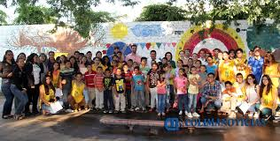

"Sand grains"


- 


An orphanage, orphanage, orphanage, child care center or "child protection center" is an institution responsible for the care of minors, orphans or abandoned (exhibits) and children or adolescents, to whom the authorities have separated from their parents, withdrawing parental rights. Normally, orphanages are considered as a lower alternative to adoption or foster homes and may be financed by public or private capital, with traditional adjudication to religious entities being traditional.
Most orphanage environments, particularly for infants and young children, do not support the proper growth of the child. In many instances, placement in orphanages can produce long-term and sometimes permanent effects on the brains of children and children. its physical, intellectual and socio-emotional development. Children raised in large-scale orphanages often have widespread growth problems, including growth retardation (severe growth retardation), and deficiencies in fine and gross motor skills and coordination. The larger the orphanage, the lower the chances that the child will receive consistent care from a caregiver focusing on the child's individual needs. Typically, children will be fed in groups following a schedule instead of when requested, diapers will be changed at a time instead of when needed, and less attention will be given to individual growth, emotional and social development of the child. Low quality care and a deficiency of individual stimulation can lead not only to health and developmental problems, but also to isolation and lack of identity (the essential sense of being that develops through close relationships).
The negative effects associated with orphanages are more severe the longer a child remains in large-scale residential care, and they are more critical in younger children, especially those under three years of age. The first three years of life are a "sensitive period" where a child requires intimate contact both physically and emotionally. If this is not present, there is a high risk that development will be significantly affected.
Unfortunately Mexico occupies the second place in Latin America with 1.6 million cases of orphaned children, in addition the adoption procedures take so long that children grow up and it is already more difficult to find them a home, for this reason the State Law on Child Protection must be reformed and approve it with the federal to facilitate the process, said deputy Monica Rodriguez Della Vecchia.
Currently, 29 thousand 310 children, children and adolescents aged 0 to 14 live in state custody, 70 percent of the children available for adoption, have difficulty finding a home, due to their ages, from 7 to 18 years and it is that the process takes so long that the infants grow.
58.2 percent of adopters have a preference for children from 4 to 9 years old, so the legislator proposes to reform various provisions to the Law on the Rights of children and adolescents of the State of Puebla to homologate it with the General Law and thus establish that children in distress must be reintegrated into their family or reintegrated into a family through adoption, but through a safe, effective, transparent and agile procedure.
In 2011 there were only 54 cases of adoption of children with some type of disability.
Sinaloa and the State of Mexico were the entities with the highest number of requests for adoption of minors.
In addition, data indicate that from 2006 to 2014, 261 Mexican children were adopted by foreigners; 30% of adoptions were processed by Italian citizens.
In Mexico, the adoption procedure is carried out in the offices of the DIF of each state. The requirements to adopt are:
In colima, orphanages are not considered as such, but as homes, where children can be found in a state of neglect, in care because parents cannot have time for them (it could be said that some are like boarding school where children are there from Monday to Friday and on weekends they go with their parents), children who suffer interfamily abuse and adolescents who do not have the support of their parents or other close family.


In conclusion
This page was made in order to create awareness about the situation of homeless children in Mexicó and the conditions in which they live.
Also mentioning their situation in Mexico, the number of orphans there is, such as the adoption process and everything required for it.
We also focus some sites similar to the orphanage in the entity of Colima and where to locate them
Bring happiness to these children c: